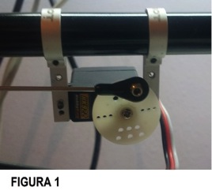
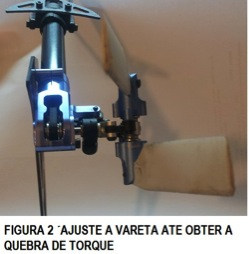
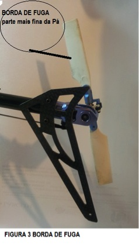
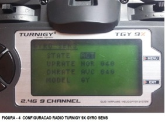
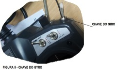

{kind=link}
Aprenda todo o procedimento de configuração e regulagem do gyro GA-250 usando um rádio Turnigy 9X.
Esse passo a passo foi contribuição do leitor: Laercio Pelegrini (laercio.pelegrini@gmail.com)
Você pode adquirir esse gyro em: http://lojahelimodelos.com/hk-gyro-ga250
Antes de passarmos para o ajuste do gyro em si, devemos deixar a mecânica funcionando da maneira adequada.
Os trins e sub-trins da cauda devem estar sempre em zero.
1º Passo: Liguei o servo diretamente no canal 4 do RX, não ligue o gyro nesse primeiro momento. Ligue o rádio e ligue o RX, deixe o horn em 90º em relação ao corpo do servo como na imagem figura 1. O entendimento é simples, como o stick está no meio, o horn também deve estar no meio do seu curso. Colocado na posição correta, parafuse o horn normalmente.

Normalmente os servos vem com 3 ou 4 tipos de horns, eu gosto de usar, para cauda, aquele redondo, no qual o ball link fica bem próximo do centro.
2º Passo: Ainda com o gyro desligado, vamos ajustar o tamanho da ‘vareta’ que liga o servo ao rotor de cauda. Eu gosto de ajustar a cauda do meu heli utilizando a quebra de torque , eja figura 2 os ângulos das pás de calda .

3º Passo: Aqui vamos verificar se o comando de cauda está funcionando no sentido certo. Coloque as pás do rotor de cauda abertas, uma para cima e outra para baixo, na posição normal para voo. Ao dar comando para a esquerda, olhando de trás, o bordo de fuga (o mais fino da pá – Figura 3 ) deve ir para esquerda, fazendo o movimento contrário quando para a direita. Se não estiver assim, vá no menu reverse do seu rádio e inverta o canal rudder.

Ajuste do gyro
ESSE GYRO SÓ ACEITA SERVO DIGITAL, NÃO USE ANALÓGICO.
DEIXE OS ENDPOINTS DO CANAL DA CAUDA NOS VALORES MÁXIMOS ( RUD = 100%) FRENTE.
1º Passo: A primeira coisa que devemos fazer é dizer ao gyro qual a modulação do servo que iremos usar. No manual do gyro tem os servos mais populares e qual sua modulação, isso não quer dizer que só funcione com os servos lá constantes, veja na documentação do seu servo que a modulação dele. Se não tiver documentação pesquise no Google, no site da marca, se vire… Se não encontrar em lugar nenhum, opte por deixar na mesma modulação de um servo equivalente.
Para escolhermos o tipo de servo que vamos usar, ligue somente o gyro, sem servo, no RX. No seu rádio, no menu do gyro, configure para que a chave em uma posição esteja em modo AVCS e em outra em modo normal ( FIGURA 4 ), isso se consegue determinando ‘quantidades de ganho’ diferentes para cada posição, vária de rádio para rádio, mas o valor não importa agora, o importante é que ao mudar a posição da chave o modo mude de AVCS para normal e vice-versa.
Ligue o rádio e ligue o RX, ficará piscando uma luzinha azul no gyro, movimente a chave do gyro ( FIGURA 5 )do seu rádio 3 ou mais vezes que entrará no modo de programação. Dentro do modo, ficará piscando uma luz vermelha no gyro, a quantidade de vezes que a luz pisca significa em qual tipo de servo está, por exemplo: uma vez=1520us / 333Hz, duas vezes=760us /
560Hz …. Movendo o stick de cauda para a direita você aumenta a sequencia e para a esquerda diminui. Escolhido o tipo de servo correto, é só desligar o RX.

2º Passo: Agora vamos definir se o gyro deve funcionar em modo normal ou reverso. Ligue o servo no gyro agora. Salientando, no primeiro passo ele NÃO deve estar ligado ao gyro. Ligue rádio e RX, aguarde que o gyro inicie e estabilize, coloque o stick de cauda todo para a esquerda e mova a chave do gyro por 3 ou mais vezes, entrará na programação. Um azul e um vermelho é normal – um azul e dois vermelhos é reverso. Movendo-se o stick para direita ou para esquerda muda de modo. No final mostro como testar se ficou no sentido certo ou não. NÃO SAIA DO MODO DE PROGRAMAÇÃO.
3º Passo: Aqui vamos definir os endpoints do gyro. Os valores dos EP no rádio devem estar no máximo como disse lá em cima, a limitação de movimento deve ser feita no gyro.
Escolhido no passo 2 o modo normal ou reverso, mude a chave do gyro de posição duas vezes, passamos agora a limitar o movimento. O gyro vai ficar piscando duas vezes azul e uma vermelho, indicando que vamos limitar o movimento do pitch slider para dentro, esquerda, olhando o heli por trás. Movendo o stick deixe o pitch slider bem próximo de ‘dar batente’, mas sem encostar. Você verá que enquanto se ajusta, o pitch slider não se move proporcional ao movimento do stick, é assim mesmo, vai movimentando com calma que dá certo, você dá muito comando e ele se move pouco, é normal.
Após deixar o pitch slider próximo de bater para dentro (esquerda), mude a chave do gyro duas vezes, que passaremos ao limite para fora, direita olhando por trás. As luzes do gyro piscarão três vezes azul e uma vermelho. Faça igual antes, só que para o outro lado, deixe bem próximo de bater, mas sem bater.
Terminamos! Desligue o RX e ligue novamente. Com o gyro em modo AVCS, luz azul acesa, deixe as pás do rotor de cauda em pé e mova a cauda do heli para a esquerda, os bordos de fuga das pás também devem ir para a esquerda. Se não estiver assim, você terá que entrar no modo de programação novamente e mudar o sentido do gyro de normal para reverso ou de reverso para normal, dependendo de como estiver agora. Se você teve que mudar a direção de atuação do gyro, faça os ajustes dos endpoints novamente na mesma ordem que fez antes. Feito isso a configuração no gyro acabou.
Ajustes finais no rádio
Bem, a primeira coisa já foi dita antes, deixo os end points do canal da cauda no máximo. Diminuir valor aqui vai deixar a cauda do heli lenta.
Como a cauda do seu heli vai estar um ‘furação’, você pode limitar a velocidade de atuação mudando o valor do D/R relativo ao canal da cauda. Em alguns rádios você tem que aumentar o valor em outros tem que diminuir. O ‘normal’ é ter que diminuir. Em rádios que vão até 100 deixe de início entre 75 e 90 e veja como fica.
Em relação ao ganho, os valores também variam de rádio para rádio. Se vai de 0 a 100, deixe em 40 de início e veja o comportamento. Se não ficar com wag (cauda balançando para os lados) vá aumentando de 2 em 2 até que fique com um pouco de wag, diminua 2 pontos pronto, tá acertado. Se você começou no 40 e já deu wag, vá diminuindo de 2 em 2 até parar, parou? Diminua mais 2 e pronto.
Lembrando as taxas de D/R e ganho são influem uma na outra, ou seja, se você mudar a velocidade da cauda no D/R provavelmente terá que mudar o ganho também.
Agradecimentos
A equipe Helimodelos.com agradece ao Laercio Pelegrini (laercio.pelegrini@gmail.com) por preparar e compartilhar esse passo a passo  Um modelista ajudando o outro, dessa forma o hobby se torna mais fácil e agradável… Entre em contato conosco e saiba como publicar uma matéria também ./entre-em-contato/
Um modelista ajudando o outro, dessa forma o hobby se torna mais fácil e agradável… Entre em contato conosco e saiba como publicar uma matéria também ./entre-em-contato/
Ótimas dicas ,só assim consegui voar,após configurar. Vlw rafael
muito bom